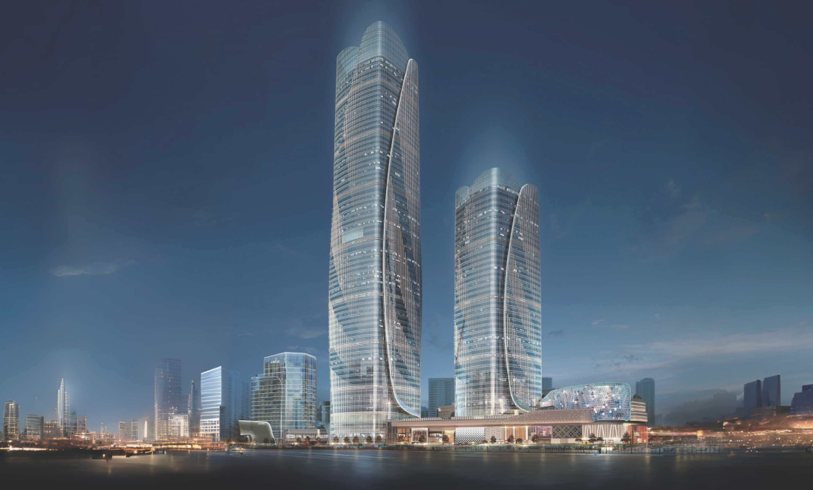
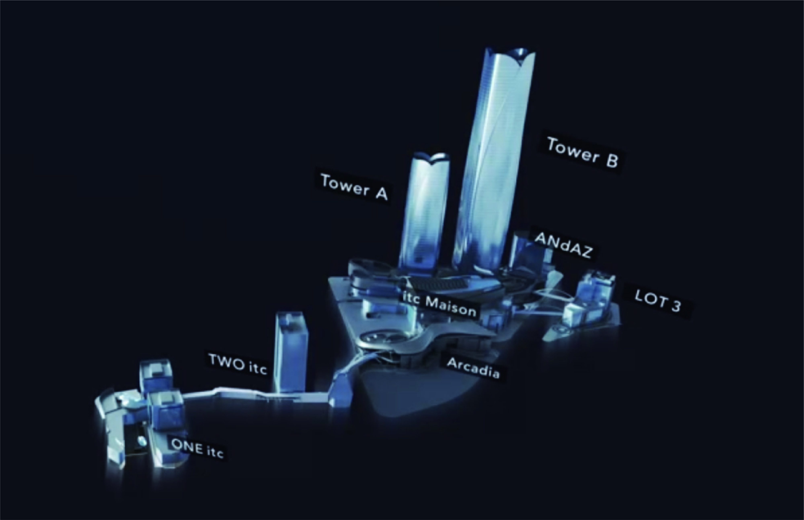

ONE itc
40MOffices
40MOffices

ABOUT itc
愿景与变革的交汇
It's time to embrace boldness and forge a new vision for the future. The International Trade Center (ITC) represents a daring urban ethos, setting new standards throughout Asia. ITC offers a unique combination of hotels, serviced apartments, offices, and a vast shopping mall. Tower B, a remarkable feature of ITC, is the tallest building in Puxi, reaching 370 meters. An innovative elevated bridge connects the project to its surroundings, improving accessibility and encouraging community interaction. With its public spaces and new city linkages, ITC fosters an inclusive urban lifestyle for everyone. Amidst the skyline, a vibrant urban atmosphere is taking shape: Discover the city!

1 2 3 4 5 6 7 8 9 9 9